Legendary Catch
Tour do mundo, região por região
Prints do Studio (24/11/2026) com o que cada área é e para que serve.
Material de apoio para o redesign da zona de portais.
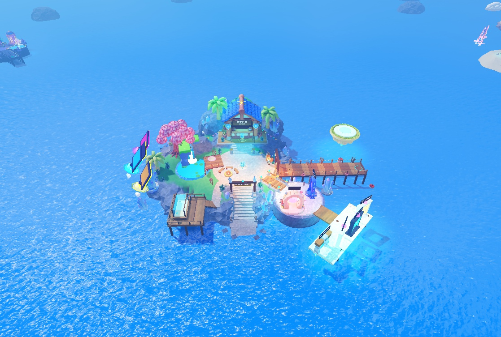
Visão geral da ilha-hub vista do sul. Ao fundo, a Oficina de Varas. À esquerda, a lagoa de treino. À direita, o píer de pesca e as duas praças de portais.
1. Mapa do mundo: quem é quem
Tudo fica num oceano grande. A ilha-hub é compacta e as outras ilhas ficam longe, acessíveis só por portais.
| Região | Onde (X, Z) | Para que serve |
|---|
| Ilha-hub | (0, 0) | Ponto de partida. Oficina, píer de pesca, praça, treino antigo, aquário, placares e portais. |
| Ilha do Recife (pesca) | (380, -220) | Zona de pesca nível 5. Mais Raras e Épicas. |
| Ilha do Abismo Estelar (pesca) | (-360, -280) | Zona de pesca nível 15. Épicas, Lendárias e Místicas. |
| Ilha de Treino 1: Aprendiz | (520, -380) | Treino x1, grátis. Lagoa do Foco (Controle) e do Instinto. |
| Ilha de Treino 2: Recife | (480, 420) | Treino x3, exige 100 mil de Poder. Versão provisória. |
| Ilha de Treino 3: Abismo Estelar | (-520, 420) | Treino x12, exige 100 milhões. Versão provisória. |
| Ilha de Treino 4: Celestial | (0, -680), altura 160 | Treino x50, exige 1 trilhão. Versão provisória. |
Regra nova (decidida em 24/11): só se treina nas ilhas de treino. O treino do hub (a "Lagoa de Treino (prática)") sai. Para treinar, o jogador pega o portal e vai até a ilha. A pesca continua no píer do hub e nas ilhas de pesca (Recife e Abismo).
2. Praça central hub
Coração do mapa. Todo caminho começa e termina aqui.
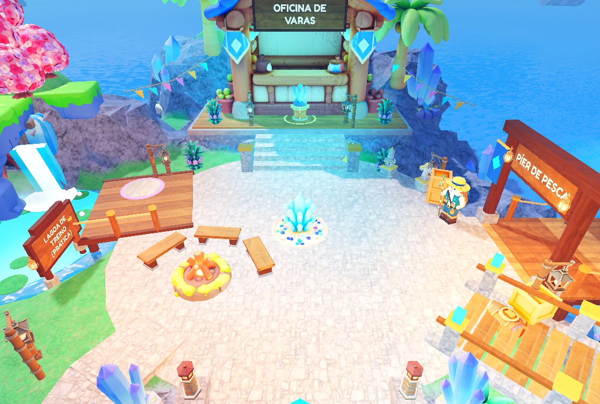
O que tem
- Oficina de Varas (terraço no fundo, telhado azul): loja e evolução das 8 varas, com prévia 3D.
- Fogueira com bancos e cristal central: ponto de encontro. Fagulhas e brilho à noite.
- Lagoa de Treino (prática) à esquerda, com a placa de madeira. Pier de Pesca à direita, com o arco de madeira.
- NPCs: Vô Anzol (guia) na entrada do píer. Lucy e Luna ficam ao pé da escada e no píer.
Para que serve
Orienta o jogador: a Oficina fica de frente para quem sobe a escada, o píer de pesca à direita e o treino à esquerda. É o lugar mais fotografado do jogo.
3. Lagoa de Treino (prática) será substituída
Treino semi-idle do hub, ao lado da cachoeira.
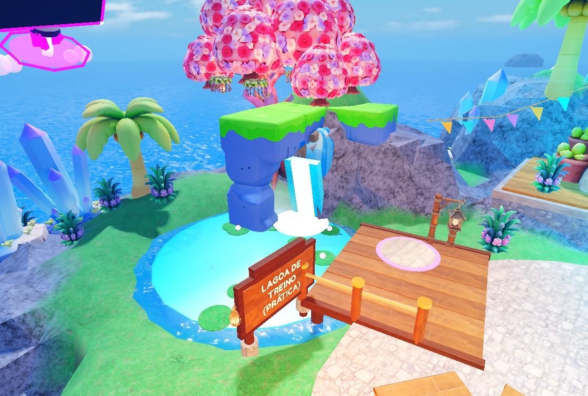
O que tem
- Lagoa azul com cachoeira caindo de um bloco de grama, árvore de flores rosa enorme, vitórias-régias, cristais, palmeira.
- Deck de madeira com o ponto de treino (peça com tag
TrainingSpot).
Para que serve hoje
O jogador fica no deck e treina Controle e Instinto (XP por segundo, anel de ritmo bônus). Com a regra nova isso vai para as ilhas, e este lugar ganha o portal da Ilha de Treino 1, encaixado na cachoeira.
Atenção para o redesign: o deck e o TrainingSpot antigos ficam arquivados (não apagar). A cachoeira, a árvore rosa e a lagoa continuam como cenário.
4. Píer de pesca hub mecânica central
Daqui se pesca no hub. Ponta do píer é a única zona de lançamento.
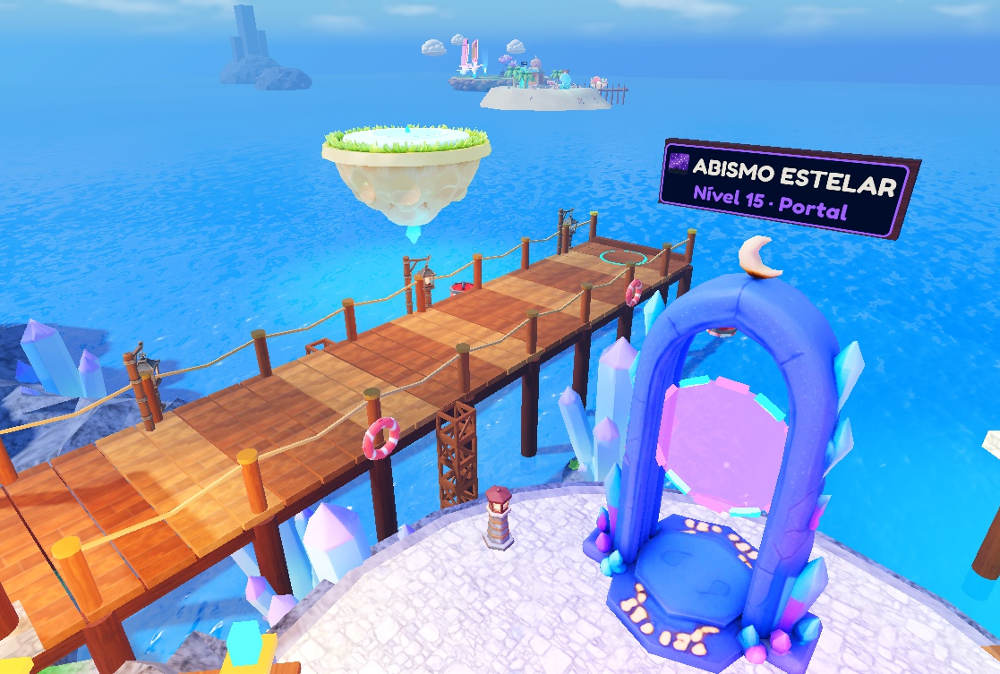
O que tem
- Píer comprido de madeira para leste, com corda, boias salva-vidas, lanternas e estacas.
- Ponta do píer com marcador ciano (zona de arremesso, tag
FishingZone).
- Do lado direito do print, o portal do Abismo Estelar na praça de portais.
Para que serve
É onde o jogo acontece: lançar, esperar a mordida, minigame, revelação. O arremesso só é permitido na ponta (CAST_SPOTS) e a cutscene de lançamento depende dessa posição, então o píer não pode mudar de lugar no redesign.
5. Praça dos portais de pesca hub
Plataforma redonda ao sul do píer, com dois portais para as ilhas de pesca.
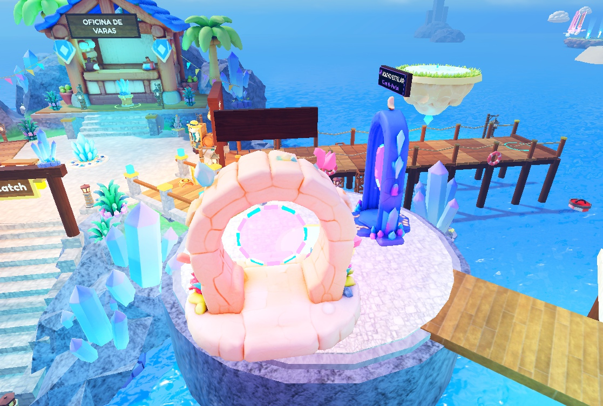
O que tem
- Portal do Recife de Coral (coral rosa, nível 5) e portal do Abismo Estelar (azul-violeta, nível 15).
- Plataforma de pedra clara sobre uma coluna de rocha, ligada ao píer por uma ponte de madeira. Cristais em volta.
Para que serve
Leva às duas ilhas de pesca com zonas melhores. O servidor bloqueia por nível (levelLocked). Cada portal tem tag ZonePortal com Destination e ZoneId.
6. Praça dos portais de treino hub bagunça
Deck branco com 4 portais, colado à praça de pesca. É uma das áreas que serão redesenhadas.
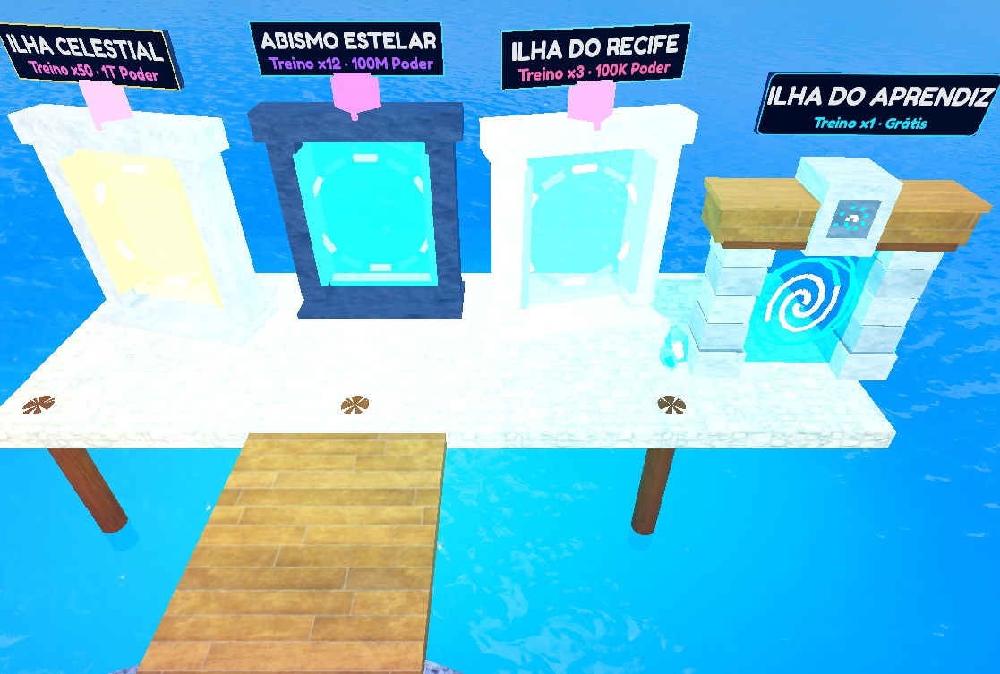
O que tem
- 4 portais em fila, cada um com placa: Aprendiz (x1, grátis), Recife (x3, 100K), Abismo Estelar (x12, 100M), Celestial (x50, 1T de Poder).
- Estilos diferentes entre si (pedra, calcário, azul-escuro, amarelo) e deck branco chapado sobre água.
Problemas
- Os 4 portais não parecem uma família. O do Aprendiz é menor e de outro material.
- Deck branco liso, sem identidade. Fica colado e confuso com a praça de portais de pesca.
7. Oficina de Varas hub
Loja de varas no terraço do fundo.
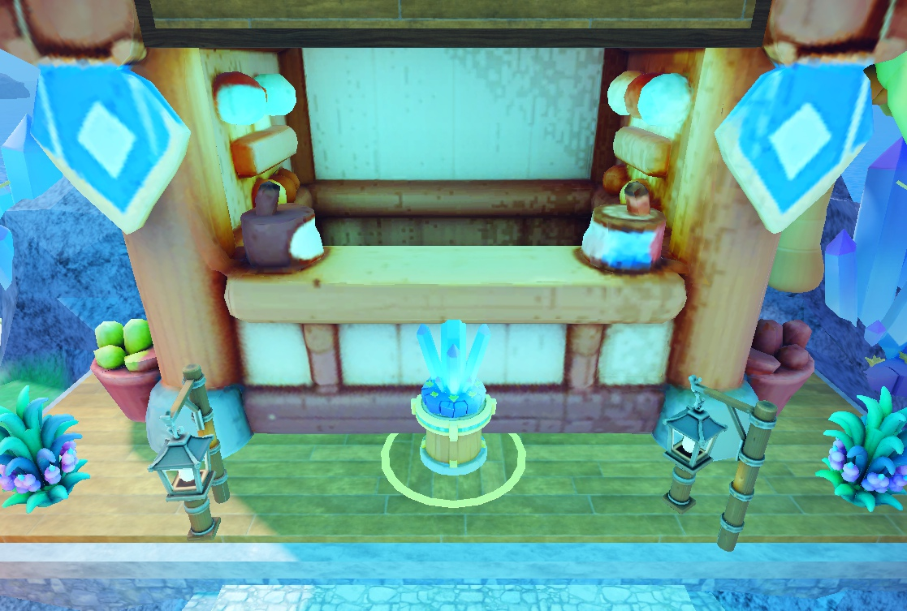
O que tem
- Balcão de madeira com frascos e potes, cristal em vaso no centro, plantas, lanternas, bandeirolas e cristais de pedra em volta. Telhado azul com placa "Oficina de Varas".
Para que serve
Comprar e equipar as 8 varas (Iniciante a Mística). A vara muda pouco a renda e muito a sorte. O prompt de interação é OpenWorkshop (ProximityPrompt no servidor).
8. Escadaria de entrada e Aquário hub
Ao sul. Aqui o jogador nasce e sobe até a praça.
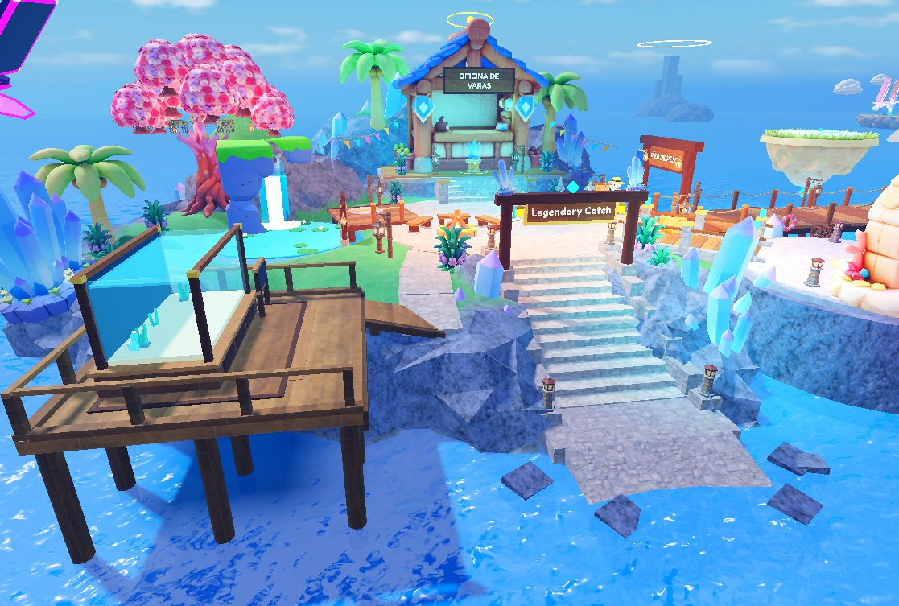
O que tem
- Escadaria de pedra com arco "Legendary Catch", lanternas e cristais nas laterais. Pedras flutuando na água embaixo.
- Aquário (à esquerda, plataforma de madeira sobre estacas, vitrine de vidro): vitrine da coleção, em construção (
AquariumNursery e AquariumPath).
- Ao fundo: lagoa de treino, árvore rosa, Oficina de Varas e o píer.
9. Placares flutuantes hub
Rankings globais em hologramas sobre o mar, à esquerda da lagoa.
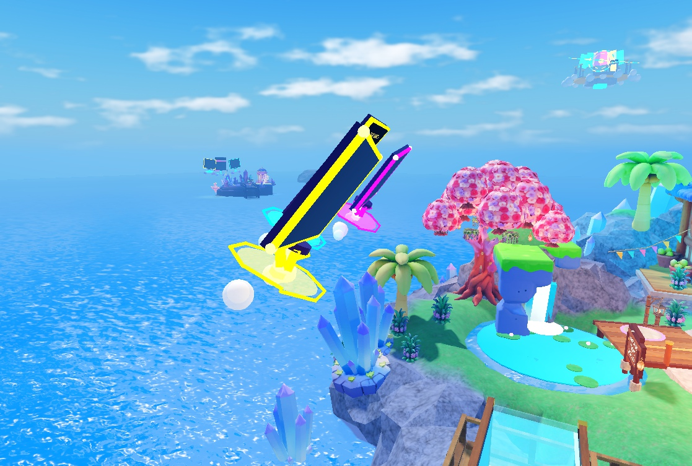
Três painéis amarelo, rosa e ciano sobre bases hexagonais. Mostram o placar global (OrderedDataStore) por categoria. Hoje aparecem inclinados no Studio e sem conteúdo, então vale conferir em Play.
10. Ilha do Recife (pesca) zona nível 5
Ilha de areia com palmeiras, píer e uma casinha de concha.
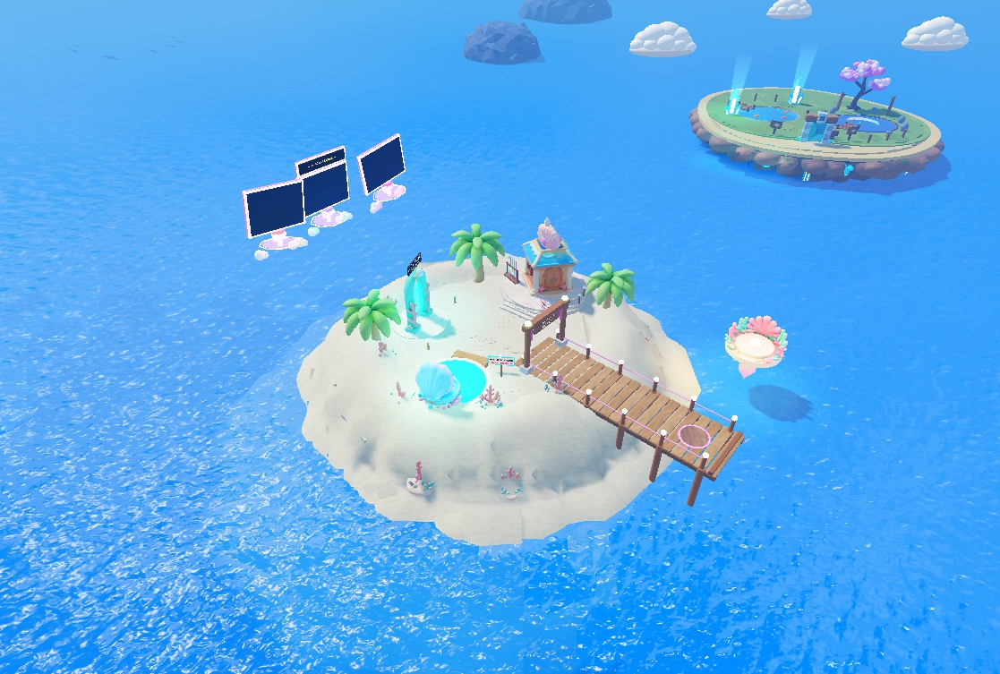
- Píer de madeira com corda rosa, portal de volta, concha gigante com brilho, placares flutuantes ao lado.
- Zona de pesca com Raro ×1,4 e Épico ×1,3. Portal de volta ao hub (
Destination="main").
- No canto, vê-se a ilha de Treino 1 (Aprendiz) ao longe.
11. Ilha do Abismo Estelar (pesca) zona nível 15
Ilha roxa e azul-noite, com mirante, fonte e cristais.
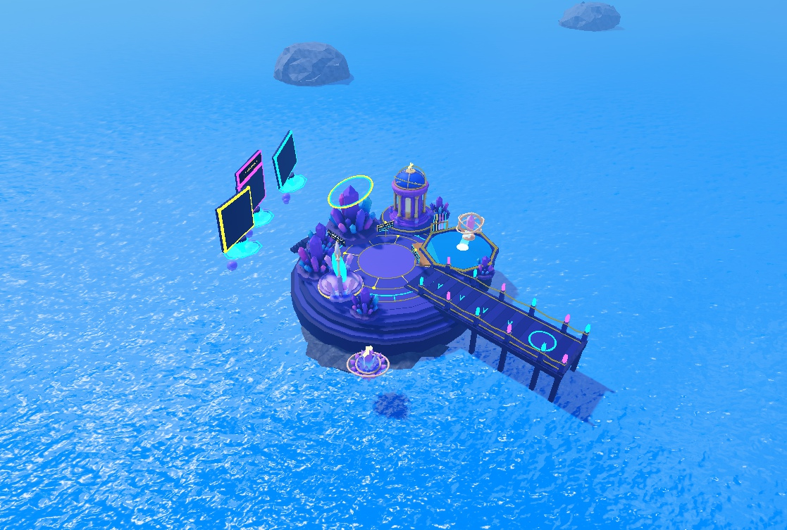
- Plataforma circular com mirante de colunas, cristais roxos, concha, fonte octogonal e píer neon.
- Zona de pesca com Épico ×1,5, Lendária ×1,6 e Mística ×1,3.
12. Ilha de Treino 1: Aprendiz treino x1 nova
Construída pelo código do Gemini e ajustada hoje. Grátis.
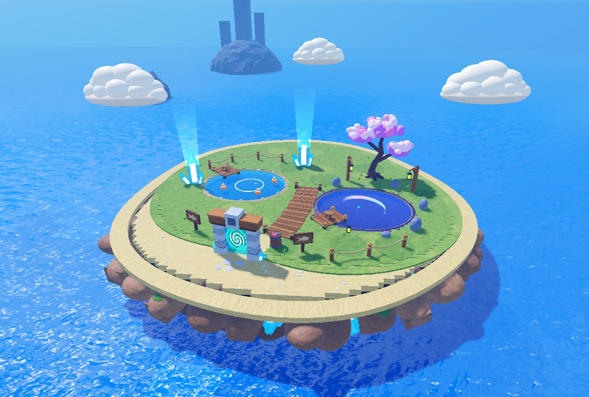
- Lagoa do Foco (azul, treina Controle) à esquerda, Lagoa do Instinto (roxa, treina Instinto) à direita, píer diagonal no meio, portal de pedra com espiral à frente.
- Árvore de flores, cercas, placas, barril, cristais e nuvens.
- Contrato testado em Play: chegar pelo portal, andar até os decks, treinar e voltar.
- Falta polir: rocha da lateral, cachoeiras, água da lagoa roxa e peso (~2800 peças).
13. Ilha de Treino 2: Recife treino x3 provisória
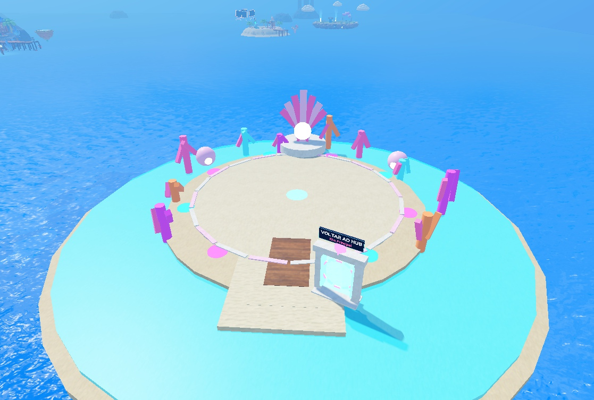
- Disco turquesa com areia, concha-monumento, corais de cubos e portal "Voltar ao Hub". Muito simples.
- Exige 100 mil de Poder de Pesca. Já existe um prompt para o Gemini refazer (
docs/prompts-gemini/ILHA-2-RECIFE-GEMINI-CHAT.md).
14. Ilha de Treino 3: Abismo Estelar treino x12 provisória
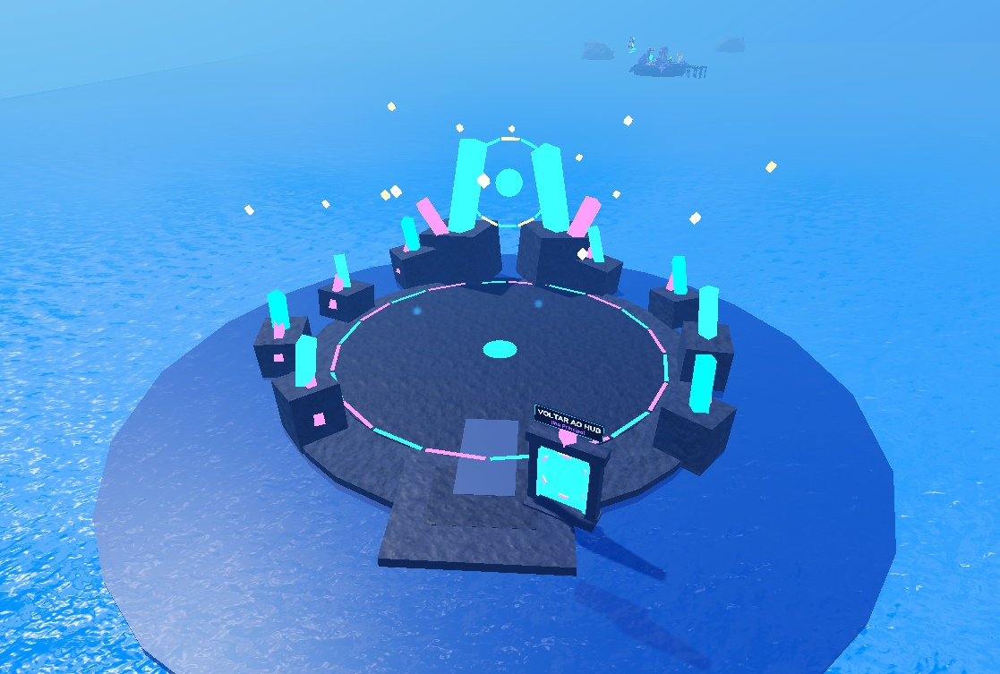
- Plataforma escura com blocos, cristais ciano e rosa e portal "Voltar ao Hub".
- Exige 100 milhões de Poder.
15. Ilha de Treino 4: Celestial treino x50 provisória
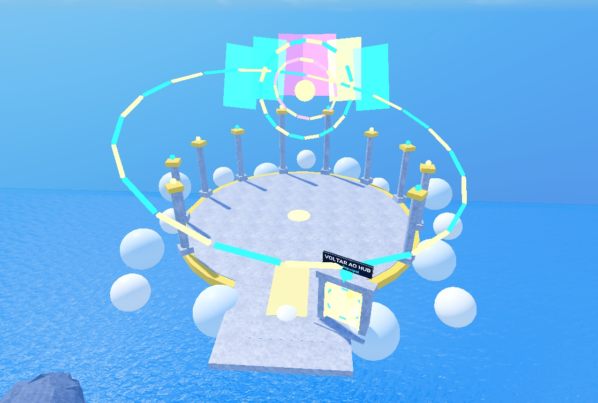
- Plataforma alta (Y 160) com colunas, esferas de nuvem e anéis de luz. Exige 1 trilhão de Poder.
16. Resumo para o redesign dos portais
Hoje: duas praças de portais coladas ao sul do píer: uma de pesca (2 portais, pequena, redonda) e uma de treino (4 portais em fila, deck branco). Estilos misturados, muita coisa junta, sem caminho claro.
O que o João quer
- Zona nova só para portais das ilhas de pesca (Recife e Abismo, e futuras).
- Zona nova só para portais das ilhas de treino (4 ilhas), com caminho próprio.
- Caminhos especiais ligando a praça central a cada zona.
- O portal da Ilha de Treino 1 vai no lugar da Lagoa de Treino atual, encaixado na cachoeira, como parte do cenário.
- O pier de pesca atual (e a ponta de arremesso) não muda.
O que não pode quebrar
- Tags
ZonePortal, ZoneSpawn, TrainingSpot e FishingZone, e os atributos PortalId, ZoneId, Destination.
- Nomes de destino:
training_1 (Aprendiz), training_reef, training_abyss, training_celestial, coral, abyss, main.
- A posição do píer e da ponta de arremesso.
Detalhes do pedido de redesign em docs/prompts-gemini/HUB-PORTAIS-REDESIGN-GEMINI.md.